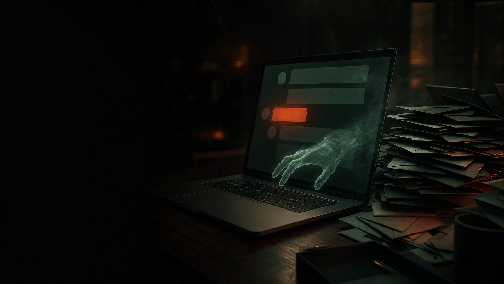
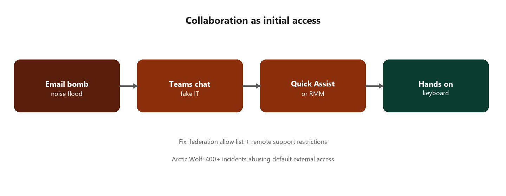

Fake IT Support Scams Are Abusing Microsoft Teams Chat

Arctic Wolf Labs published an analysis on 26 October 2026 of more than 400 incidents where attackers abused Microsoft Teams external chat for initial access. Help Net Security and Infosecurity Magazine covered the research in late October 2026.

There is no CVE to patch here. Teams external access (federation) is a product feature, often enabled broadly by default. Attackers create or acquire Microsoft 365 tenants, message employees as “IT support,” and talk them into remote assistance. Some cases escalate to credential theft, lateral movement, and ransomware related activity.
If your mental model of initial access is still “email link or exploited appliance,” update it. Chat is part of the edge.
The playbook defenders keep seeing
Public reporting describes a highly consistent pattern:
- Optional email bombing: flood the mailbox with newsletter and subscription noise.
- Moments later, a Teams message from an external account that looks like IT support.
- Display names such as “IT Support (Internal)” or “HelpDesk Manager,” or a friendly first name, to muddy the external label (Dark Reading).
- Push to a voice call and remote access, especially Windows Quick Assist, then commercial RMM tools such as AnyDesk or ScreenConnect for persistence.
- Payload execution in under 15 minutes in some observed cases.
Help Net Security notes that a large share of cases used free onmicrosoft.com tenants with IT themed names, with a shift toward paid domains including many .top identities. Attackers avoid dropping scanned links in chat when they can download tooling themselves during the remote session.
This technique is not brand new. Microsoft described Storm-1811 abusing Quick Assist in help desk impersonation in May 2024, and Sophos MDR tracked email bombing plus Teams vishing campaigns tied to the Black Basta ecosystem. The October research matters because of documented scale and operational consistency across hundreds of incidents.
Detection that does not wait for malware
You will miss this if you only alert on “known bad hash.”
Arctic Wolf names the best detection point: the attackers open a one to one chat, which Microsoft 365 audit logs record as a ChatCreated event, and its alerts usually fire there before the user does anything.
Identity and Teams signals
- External Teams chats to employees from newly created tenants
- External senders whose display names contain IT, Helpdesk, Support, or Internal
- Bursts of external chat attempts across multiple users inside a few minutes
- Teams calls from external identities immediately after email flood anomalies
Endpoint signals
- Quick Assist launched in correlation with an external Teams session
- New installs of AnyDesk, ScreenConnect, or similar RMM outside IT change control
- User executed PowerShell one liners during or right after a Teams support call
- Simultaneous credential theft alerts and first external Teams message, which Arctic Wolf noted in some cases
Mail signals
- Sudden subscription confirmation storms to a single user
- Pair that storm with a Teams external chat within minutes
Wire these as a single incident type: “suspected fake support.” Do not make the help desk open five unrelated tickets.
Two Defender XDR advanced hunting queries to start from. Treat them as a starting point: confirm the RawEventData fields in your own tenant before you alert on them.
// External one to one Teams chats created in the last 7 days
CloudAppEvents
| where Timestamp > ago(7d)
| where Application == "Microsoft Teams" and ActionType == "ChatCreated"
| extend HasExternal = tobool(RawEventData.ParticipantInfo.HasForeignTenantUsers)
| where HasExternal
| project Timestamp, AccountObjectId, AccountDisplayName, RawEventData// Quick Assist and common RMM launches in the same window
DeviceProcessEvents
| where Timestamp > ago(7d)
| where FileName in~ ("quickassist.exe", "AnyDesk.exe", "ScreenConnect.ClientService.exe")
| project Timestamp, DeviceName, AccountName, FileName, InitiatingProcessFileNameJoin the two on the user and a 30 minute window. A new external chat followed by a remote support launch on that user’s device is the pattern.
Mitigation that actually reduces the class of attack
Technical controls first:
- In the Teams admin center, go to Users, then External access, and switch from allowing all external domains to allowing only specific external domains your business truly needs
- Confirm trial only tenants are blocked:
Set-CsTenantFederationConfiguration -ExternalAccessWithTrialTenants "Blocked". Blocked has been the default since mid 2024, so the real check is that nobody switched it back. It does nothing against attacker tenants that hold even one paid seat, which is why the allow list matters more. - Restrict Quick Assist and commercial RMM to authorized support staff via application control or Windows policy
- Require privileged remote support to originate from known IT identities on known tools
People and process next:
- Tell employees that real IT does not cold DM them from external tenants
- Create a verification channel: hang up, call the published service desk number or open an internal ticket
- Train the service desk to ask whether the user is currently on an external Teams call before walking through remediation
- Ban the habit of reading Quick Assist codes to strangers, even polite ones
Most organizations do not need the entire internet able to chat their workforce. Treat open federation like open SMB. Useful in tiny cases. Dangerous as a default.
What to tell executives
We face a high volume social engineering pattern that abuses default Teams collaboration features, documented across 400+ incidents. It is not a Teams vulnerability patch problem. It is an external access policy problem plus remote support hygiene. Closing federation to an allow list and constraining Quick Assist cuts off the cheapest path.
A one week hardening sprint
- Day 1: export current external access policy and list of allowed domains.
- Day 2: draft the allow list with business owners. Remove “everyone” as a setting.
- Day 3: restrict Quick Assist and unapproved RMM via policy.
- Day 4: ship employee guidance and service desk verification steps.
- Day 5: enable detections for external IT themed chats correlated with remote support binaries.
- Day 6 to 7: tabletop one email bomb plus Teams helpdesk lure end to end.
That sprint is cheaper than one ransomware weekend.
Checklist
- Audit current Teams external access mode
- Convert to domain allow lists where possible
- Inventory who can run Quick Assist and RMM tools
- Add detections for external IT themed chats paired with remote support binaries
- Publish a one page employee verification procedure
- Tabletop a fake helpdesk call that starts in Teams
Attackers will keep using the collaboration tools you celebrate in all hands meetings. Configure those tools like security products, because that is how adversaries already treat them.
Sources
- Arctic Wolf Labs: threat actors abuse Microsoft Teams external chat for initial access
- Help Net Security: hackers bury inboxes in spam then show up on Teams posing as IT support
- Infosecurity Magazine: attackers exploit Teams external chat to breach organizations in under 15 minutes
- Dark Reading: external Teams chats anchor 15 minute malware delivery
- Microsoft Learn: manage external meetings and chat
- Microsoft Threat Intelligence: threat actors misusing Quick Assist in social engineering attacks (May 2024)
- Sophos MDR: two ransomware campaigns using email bombing and Teams vishing